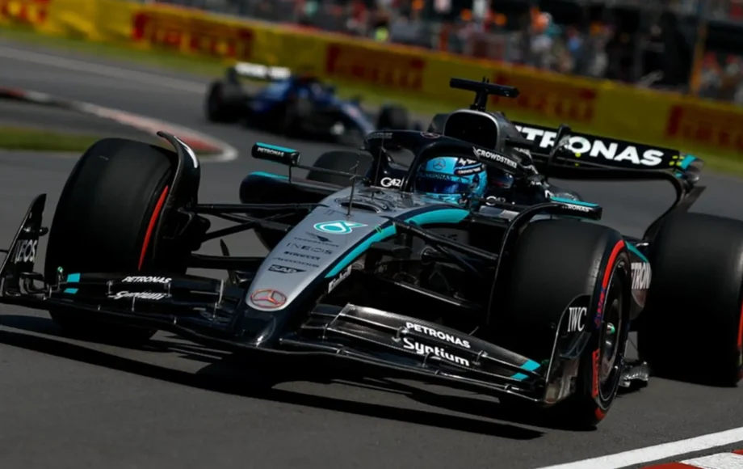
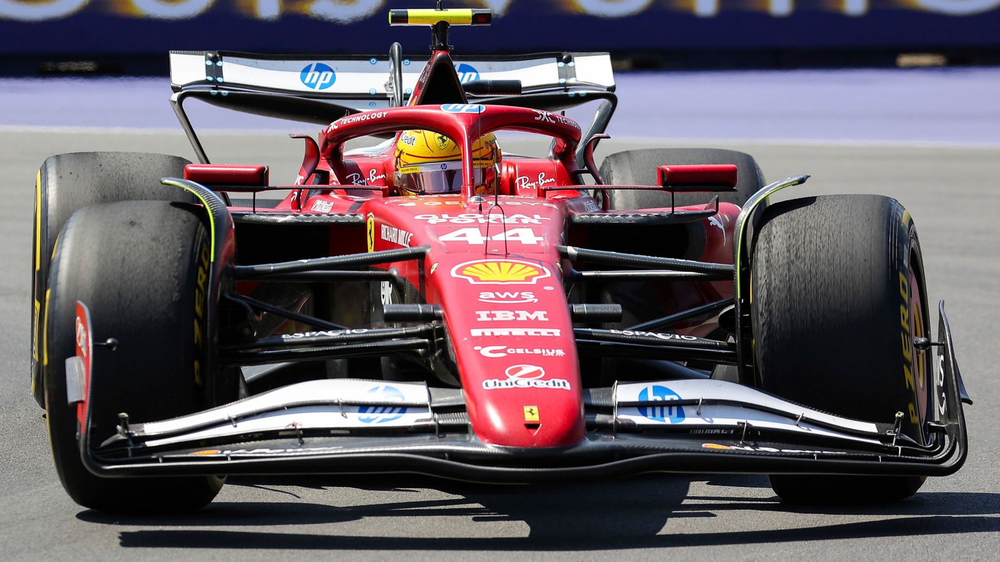

© 2025 Formula One History
Montreal has a reputation. Wet walls. Rogue strategy. Drama duct-taped to every turn. But in 2025? The only thing that crashed spectacularly was McLaren's hope — and a squirrel's cousin. The Canadian GP didn't give us a thriller. It gave us a slow-burn novel with a few pages violently torn out in the final chapters.
George Russell, a man often accused of driving with too much caution and not enough chaos, finally let his inner menace take the wheel. He nailed pole on Saturday and then pulled off what can only be described as a therapeutic victory. No drama. No radio poetry. Just clean lines, clean air, and a very un-Canadian level of ruthlessness. George didn't win the race — he disassembled it, lap by lap, until there was nothing left for anyone else to grab.

© 2003-2025 Formula One World Championship Limited
McLaren's Papaya Tragedy
Behind him, though? Flames.
McLaren were poised for big points. Oscar Piastri was running strong in third, cool and calculating. Lando Norris had fresher tyres and faster pace. All they had to do was not collide.
So of course, they collided.
On Lap 66, Norris sent it down the inside like he forgot Oscar was on the team. Crunch. Carbon flew. Norris was out. Piastri finished with a mangled floor and what we can only assume was an equally mangled mood. The radio was short and sharp:
> "That's on me. All my fault. Sorry, mate."
Brutally honest. Painfully British. Respectfully tragic.
The Rookie's Moment
Enter Kimi Antonelli. At just 18 years old, he wasn't supposed to be here yet — not on a Montreal podium next to Verstappen and Russell. But when the papayas folded like a weak dosa, Antonelli capitalised. Quiet, precise, and about as expressive as a torque wrench, he took P3 like it was just another Tuesday. This was his coming-out party — not with fireworks, but with quiet competence and ridiculous pace.

© 2025 Sky UK
Lewis vs. The Montreal Mascot
And Lewis? Oh, Lewis. In his new Ferrari colours, still trying to make magic happen. He might have — if not for the Montreal mascot: a groundhog with a death wish. On Lap 15, Lewis hit it head-on. The telemetry showed an immediate 20-point loss in front downforce. The front wing wasn't broken. But the vibe was. The old Montreal curse strikes again — this time, with fur.
Charles Leclerc was fast-ish, sad-ish, and somehow still fifth. Business as usual.
Max Verstappen, meanwhile, finished P2 in classic Max fashion — efficient, unbothered, and possibly daydreaming about sim racing mid-race. Red Bull's strategy worked, but there was no fire in it. No Max radio meltdown. No last-lap heroics. Just a professional drive that deserved applause, but not a standing ovation.
The midfield? Strategy copy-pasted. One-stop. Tyres managed. Position held. The only thing unpredictable about this race was how predictable it was — until it wasn't.

© 2003-2025 Formula One World Championship Limited
🏁 Final Classification:
🥇 George Russell — Smooth operator mode unlocked
🥈 Max Verstappen — Efficient. Emotionless. Expected.
🥉 Kimi Antonelli — Future world champion loading...
💥 DNF: Lando Norris — Took out his teammate and himself. Owned it. Still hurts.
🐾 Lewis Hamilton — Groundhog said "not today, champ."
💭 Verdict:
Canadian GP 2025 was a contradiction — it gave us calm and catastrophe, silence and screams. McLaren fans cried. Russell fans exhaled. Antonelli fans multiplied. And somewhere in Montreal, there's a groundhog who unknowingly played a bigger part in this championship than most strategy teams.
This wasn't the cinematic chaos of Canada. It wasn't a classic. But in the stillness, we saw a few futures get rewritten.
Sometimes, DRS & Drama doesn't mean overtakes and carnage. Sometimes, it's the quiet moments that echo the loudest.